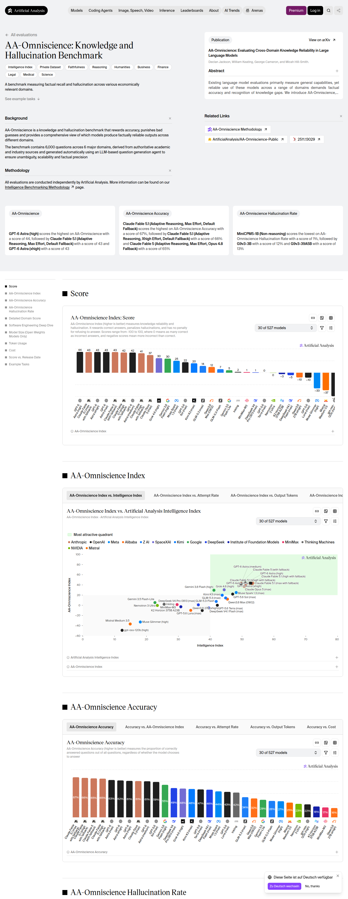
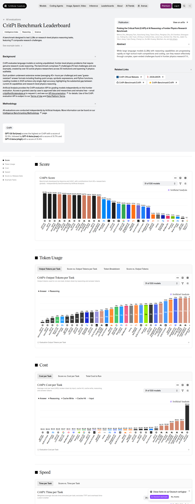
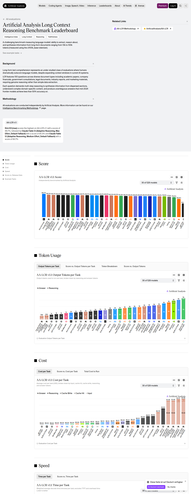
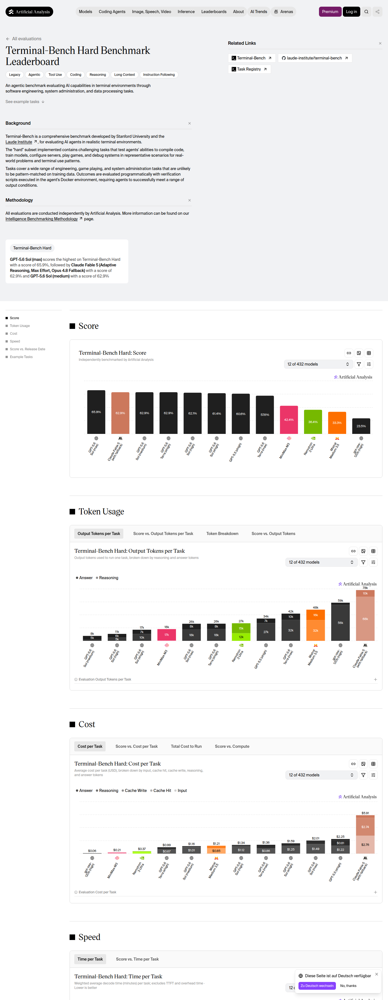

SUPRABENCH · CURATION RUN · 2026-09-17 · batch 1 of 3
Dense frontier backfill from Artificial Analysis
The ranking audit of 16–17 September 2026 showed that SupraBench under-measured the current frontier: Claude Fable 5.1 had five benchmark cells in production while its publisher-run results covered fifteen, results of one release were scattered over several configuration names, and the benchmarks on which every frontier release is measured today had been deferred run after run. This batch inserts cells that Artificial Analysis publishes and production lacked. Nothing is replaced or removed; existing cells — whatever their source — are left untouched.
Values were read from the result matrix embedded in the publisher's pages (payload self.__next_f, arrays models and initialModels) at 2026-09-17T16:42:42.422Z and rounded to the precision the publisher displays (0.1 %, whole Elo points, 0.1 index points). The screenshots below document page, benchmark version and chart at read time.
Summary
- 144 score rows inserted across 5 sources (69 belong to the publisher's 30 default frontier models).
- New benchmarks in this batch: AA-Omniscience, CritPt.
- New models in this batch: Gemini 3.5 Flash-Lite, Inkling (xhigh), DeepSeek V4 Pro 0813 (max), K2 Horizon 375B A23B.
Benchmarks admitted
| Benchmark | Scale stored | Rating (relevance / contamination resistance / discriminability / reproducibility / difficulty) | Why |
|---|---|---|---|
| AA-Omniscience | -100 … 100 | 4 / 5 / 5 / 3 / 4 | Artificial Analysis' knowledge and hallucination benchmark: 6,000 questions across six domains with a held-out answer set. The Omniscience Index (−100 to 100) rewards correct answers, penalises hallucinated ones and does not penalise abstaining. |
| CritPt | 0 … 1000 | 3 / 5 / 4 / 4 / 5 | CritPt as run by Artificial Analysis: 71 composite research-level physics challenges with held-out answers and automatic grading; frontier models solve well under half. |
All six benchmarks admitted in this run are components of the Artificial Analysis Intelligence Index v4.3 and are run by the publisher on every current frontier release. Private or judge-graded sets are admitted under the same rule that admitted APEX-Agents-AA, AA-LCR and AutomationBench-AA; the uncertainty is priced into the reproducibility rating (2–3) instead of a deferral.
Source evidence
https://artificialanalysis.ai/evaluations/omniscience

https://artificialanalysis.ai/evaluations/critpt

https://artificialanalysis.ai/evaluations/artificial-analysis-long-context-reasoning

https://artificialanalysis.ai/evaluations/terminalbench-hard

https://artificialanalysis.ai/evaluations/apex-agents-aa

Inserted rows
AA-Omniscience — 52 rows
| Production model | Publisher row | Publisher value | Stored raw score |
|---|---|---|---|
| GPT-6 Astra (high) | GPT-6 Astra (high) | 43.7333333333333 | 43.7 |
| Claude Fable 5.1 (max with fallback) | Claude Fable 5.1 (max with fallback) | 43.45 | 43.5 |
| GPT-6 Astra (xhigh) | GPT-6 Astra (xhigh) | 43.4166666666667 | 43.4 |
| GPT-6 Astra (max) | GPT-6 Astra (max) | 43.4 | 43.4 |
| Claude Fable 5.1 (xhigh with fallback) | Claude Fable 5.1 (xhigh with fallback) | 42.3833333333333 | 42.4 |
| GPT-6 Astra (medium) | GPT-6 Astra (medium) | 42.2166666666667 | 42.2 |
| Claude Fable 5.1 (high with fallback) | Claude Fable 5.1 (high with fallback) | 40.8 | 40.8 |
| Claude Fable 5.1 (medium with fallback) | Claude Fable 5.1 (medium with fallback) | 37.6 | 37.6 |
| Claude Opus 5 (Max) | Claude Opus 5 (max) | 37.0666666666667 | 37.1 |
| Claude Opus 5 (xhigh) | Claude Opus 5 (xhigh) | 35.3833333333333 | 35.4 |
| Claude Opus 5 (High) | Claude Opus 5 (high) | 33.7166666666667 | 33.7 |
| Gemini 3.1 Pro Preview | Gemini 3.1 Pro Preview | 31.8833333333333 | 31.9 |
| Grok 4.6 (high) | Grok 4.6 (high) | 30.4833333333333 | 30.5 |
| Gemini 3.8 Flash (high) | Gemini 3.8 Flash (high) | 29.55 | 29.6 |
| Grok 4.6 (xhigh) | Grok 4.6 (xhigh) | 29.3166666666667 | 29.3 |
| Gemini 3.8 Flash (medium) | Gemini 3.8 Flash (medium) | 28.5833333333333 | 28.6 |
| Grok 4.6 (medium) | Grok 4.6 (medium) | 28 | 28 |
| Muse Spark 1.3 (max) | Muse Spark 1.3 (max) | 25 | 25 |
| Muse Spark 1.3 (xhigh) | Muse Spark 1.3 (xhigh) | 23.1166666666667 | 23.1 |
| GPT-5.6 Sol (max) | GPT-5.6 Sol (max) | 21.9666666666667 | 22 |
| Gemini 3.8 Flash (low) | Gemini 3.8 Flash (low) | 21.35 | 21.4 |
| GPT-5.6 Sol (xhigh) | GPT-5.6 Sol (xhigh) | 20.9833333333333 | 21 |
| GPT-5.6 Sol (high) | GPT-5.6 Sol (high) | 20.3666666666667 | 20.4 |
| Kimi K3 (max) | Kimi K3 (max) | 19.7 | 19.7 |
| GPT-5.6 Sol (medium) | GPT-5.6 Sol (medium) | 19.4 | 19.4 |
| Claude Sonnet 5 (Max) | Claude Sonnet 5 (max) | 16.45 | 16.5 |
| GLM-5.3 (max) | GLM-5.3 (max) | 14.3 | 14.3 |
| GPT-5.3 Codex (xhigh) | GPT-5.3 Codex (xhigh) | 10.8666666666667 | 10.9 |
| GLM-5.3-Flash (max) | GLM-5.3-Flash | 7.46666666666667 | 7.5 |
| Gemini 3.5 Flash-Lite | Gemini 3.5 Flash-Lite | 5.23333333333333 | 5.2 |
| Qwen3.8 2.4T A95B (max) | Qwen3.8 2.4T A95B | 4.31666666666667 | 4.3 |
| Inkling (xhigh) | Inkling | 2 | 2 |
| MiniMax-M3 | MiniMax-M3 | 1.35 | 1.4 |
| DeepSeek V4 Pro 0813 (max) | DeepSeek V4 Pro 0813 (max) | 0.833333333333333 | 0.8 |
| GPT-5.6 Terra (max) | GPT-5.6 Terra (max) | 0.05 | 0.1 |
| NVIDIA Nemotron 3 Ultra | Nemotron 3 Ultra | -0.4 | -0.4 |
| GPT-5.6 Terra (xhigh) | GPT-5.6 Terra (xhigh) | -2.98333333333333 | -3 |
| K2 Horizon 375B A23B | K2 Horizon 375B A23B | -2.96666666666667 | -3 |
| Claude 4.5 Haiku | Claude 4.5 Haiku | -4.36666666666667 | -4.4 |
| DeepSeek V4.1 Flash (max) | DeepSeek V4.1 Flash (max) | -5.3 | -5.3 |
| Qwen3.8 27B (xhigh) | Qwen3.8 27B (xhigh) | -9.98333333333333 | -10 |
| GPT-5.6 Luna (max) | GPT-5.6 Luna (max) | -10.2833333333333 | -10.3 |
| GPT-5.6 Luna (xhigh) | GPT-5.6 Luna (xhigh) | -10.7666666666667 | -10.8 |
| o3 | o3 | -15.55 | -15.5 |
| JT-35B-Flash | JT-35B-Flash | -24.2166666666667 | -24.2 |
| Mistral Small 4 | Mistral Small 4 | -30.4 | -30.4 |
| Muse Glimmer (high) | Muse Glimmer (high) | -32.85 | -32.8 |
| Mistral Medium 3.5 | Mistral Medium 3.5 | -36.8 | -36.8 |
| Gemma 4 31B | Gemma 4 31B | -47.9333333333333 | -47.9 |
| Nova 2.0 Pro Preview (medium) | Nova 2.0 Pro Preview (medium) | -49.05 | -49 |
| gpt-oss-120B (high) | gpt-oss-120b (high) | -49.25 | -49.2 |
| gpt-oss-20B (high) | gpt-oss-20b (high) | -63.05 | -63 |
CritPt — 52 rows
| Production model | Publisher row | Publisher value | Stored raw score |
|---|---|---|---|
| GPT-5.6 Sol (max) | GPT-5.6 Sol (max) | 0.322857142857143 | 323 |
| GPT-6 Astra (max) | GPT-6 Astra (max) | 0.317142857142857 | 317 |
| GPT-6 Astra (xhigh) | GPT-6 Astra (xhigh) | 0.314285714285714 | 314 |
| Claude Fable 5.1 (xhigh with fallback) | Claude Fable 5.1 (xhigh with fallback) | 0.311428571428571 | 311 |
| Claude Fable 5.1 (high with fallback) | Claude Fable 5.1 (high with fallback) | 0.302857142857143 | 303 |
| GPT-5.6 Terra (max) | GPT-5.6 Terra (max) | 0.3 | 300 |
| Claude Fable 5.1 (max with fallback) | Claude Fable 5.1 (max with fallback) | 0.297142857142857 | 297 |
| Claude Fable 5.1 (medium with fallback) | Claude Fable 5.1 (medium with fallback) | 0.291428571428571 | 291 |
| Claude Opus 5 (Max) | Claude Opus 5 (max) | 0.291428571428571 | 291 |
| GPT-6 Astra (medium) | GPT-6 Astra (medium) | 0.291428571428571 | 291 |
| GPT-6 Astra (high) | GPT-6 Astra (high) | 0.288571428571429 | 289 |
| GPT-5.6 Sol (xhigh) | GPT-5.6 Sol (xhigh) | 0.285714285714286 | 286 |
| Claude Opus 5 (High) | Claude Opus 5 (high) | 0.282857142857143 | 283 |
| Claude Opus 5 (xhigh) | Claude Opus 5 (xhigh) | 0.277142857142857 | 277 |
| GPT-5.6 Terra (xhigh) | GPT-5.6 Terra (xhigh) | 0.271428571428571 | 271 |
| Muse Spark 1.3 (xhigh) | Muse Spark 1.3 (xhigh) | 0.26 | 260 |
| GPT-5.6 Sol (high) | GPT-5.6 Sol (high) | 0.257142857142857 | 257 |
| Muse Spark 1.3 (max) | Muse Spark 1.3 (max) | 0.248571428571429 | 249 |
| Kimi K3 (max) | Kimi K3 (max) | 0.234285714285714 | 234 |
| GPT-5.6 Sol (medium) | GPT-5.6 Sol (medium) | 0.228571428571429 | 229 |
| GPT-5.6 Luna (max) | GPT-5.6 Luna (max) | 0.205714285714286 | 206 |
| GPT-5.6 Luna (xhigh) | GPT-5.6 Luna (xhigh) | 0.205714285714286 | 206 |
| Qwen3.8 2.4T A95B (max) | Qwen3.8 2.4T A95B | 0.2 | 200 |
| Grok 4.6 (xhigh) | Grok 4.6 (xhigh) | 0.197142857142857 | 197 |
| GLM-5.3 (max) | GLM-5.3 (max) | 0.191428571428571 | 191 |
| Gemini 3.8 Flash (high) | Gemini 3.8 Flash (high) | 0.182857142857143 | 183 |
| DeepSeek V4 Pro 0813 (max) | DeepSeek V4 Pro 0813 (max) | 0.18 | 180 |
| Grok 4.6 (medium) | Grok 4.6 (medium) | 0.177142857142857 | 177 |
| Gemini 3.1 Pro Preview | Gemini 3.1 Pro Preview | 0.177142857142857 | 177 |
| Grok 4.6 (high) | Grok 4.6 (high) | 0.171428571428571 | 171 |
| Claude Sonnet 5 (Max) | Claude Sonnet 5 (max) | 0.168571428571429 | 169 |
| GPT-5.3 Codex (xhigh) | GPT-5.3 Codex (xhigh) | 0.168571428571429 | 169 |
| GLM-5.3-Flash (max) | GLM-5.3-Flash | 0.154285714285714 | 154 |
| DeepSeek V4.1 Flash (max) | DeepSeek V4.1 Flash (max) | 0.142857142857143 | 143 |
| Gemini 3.8 Flash (medium) | Gemini 3.8 Flash (medium) | 0.122857142857143 | 123 |
| Inkling (xhigh) | Inkling | 0.0542857142857143 | 54 |
| Qwen3.8 27B (xhigh) | Qwen3.8 27B (xhigh) | 0.0542857142857143 | 54 |
| K2 Horizon 375B A23B | K2 Horizon 375B A23B | 0.0457142857142857 | 46 |
| Gemini 3.8 Flash (low) | Gemini 3.8 Flash (low) | 0.04 | 40 |
| MiniMax-M3 | MiniMax-M3 | 0.0371428571428571 | 37 |
| NVIDIA Nemotron 3 Ultra | Nemotron 3 Ultra | 0.0314285714285714 | 31 |
| Muse Glimmer (high) | Muse Glimmer (high) | 0.0257142857142857 | 26 |
| gpt-oss-20B (high) | gpt-oss-20b (high) | 0.0142857142857143 | 14 |
| Gemma 4 31B | Gemma 4 31B | 0.0142857142857143 | 14 |
| o3 | o3 | 0.0114285714285714 | 11 |
| gpt-oss-120B (high) | gpt-oss-120b (high) | 0.0114285714285714 | 11 |
| Mistral Small 4 | Mistral Small 4 | 0.00285714285714286 | 3 |
| JT-35B-Flash | JT-35B-Flash | 0 | 0 |
| Gemini 3.5 Flash-Lite | Gemini 3.5 Flash-Lite | 0 | 0 |
| Nova 2.0 Pro Preview (medium) | Nova 2.0 Pro Preview (medium) | 0 | 0 |
| Claude 4.5 Haiku | Claude 4.5 Haiku | 0 | 0 |
| Mistral Medium 3.5 | Mistral Medium 3.5 | 0 | 0 |
AA Long Context Reasoning — 32 rows
| Production model | Publisher row | Publisher value | Stored raw score |
|---|---|---|---|
| GPT-5.3 Codex (xhigh) | GPT-5.3 Codex (xhigh) | 0.833333333333333 | 833 |
| Claude Fable 5.1 (xhigh with fallback) | Claude Fable 5.1 (xhigh with fallback) | 0.83 | 830 |
| Muse Spark 1.3 (xhigh) | Muse Spark 1.3 (xhigh) | 0.83 | 830 |
| GPT-5.6 Sol (xhigh) | GPT-5.6 Sol (xhigh) | 0.823333333333333 | 823 |
| Claude Sonnet 5 (Max) | Claude Sonnet 5 (max) | 0.82 | 820 |
| GPT-5.6 Luna (xhigh) | GPT-5.6 Luna (xhigh) | 0.816666666666667 | 817 |
| GPT-5.6 Sol (high) | GPT-5.6 Sol (high) | 0.816666666666667 | 817 |
| Grok 4.6 (medium) | Grok 4.6 (medium) | 0.81 | 810 |
| Grok 4.6 (xhigh) | Grok 4.6 (xhigh) | 0.81 | 810 |
| Gemini 3.8 Flash (low) | Gemini 3.8 Flash (low) | 0.806666666666667 | 807 |
| Claude Opus 5 (xhigh) | Claude Opus 5 (xhigh) | 0.803333333333333 | 803 |
| GPT-5.6 Sol (medium) | GPT-5.6 Sol (medium) | 0.803333333333333 | 803 |
| DeepSeek V4 Pro 0813 (max) | DeepSeek V4 Pro 0813 (max) | 0.803333333333333 | 803 |
| GPT-6 Astra (xhigh) | GPT-6 Astra (xhigh) | 0.8 | 800 |
| K2 Horizon 375B A23B | K2 Horizon 375B A23B | 0.8 | 800 |
| GPT-6 Astra (high) | GPT-6 Astra (high) | 0.8 | 800 |
| GLM-5.3 (max) | GLM-5.3 (max) | 0.796666666666667 | 797 |
| GPT-6 Astra (medium) | GPT-6 Astra (medium) | 0.796666666666667 | 797 |
| NVIDIA Nemotron 3 Ultra | Nemotron 3 Ultra | 0.793333333333333 | 793 |
| Claude Opus 5 (Max) | Claude Opus 5 (max) | 0.793333333333333 | 793 |
| Claude Opus 5 (High) | Claude Opus 5 (high) | 0.79 | 790 |
| GPT-5.6 Terra (xhigh) | GPT-5.6 Terra (xhigh) | 0.79 | 790 |
| Inkling (xhigh) | Inkling | 0.773333333333333 | 773 |
| Gemini 3.5 Flash-Lite | Gemini 3.5 Flash-Lite | 0.76 | 760 |
| o3 | o3 | 0.746666666666667 | 747 |
| Gemma 4 31B | Gemma 4 31B | 0.696666666666667 | 697 |
| Mistral Medium 3.5 | Mistral Medium 3.5 | 0.693333333333333 | 693 |
| JT-35B-Flash | JT-35B-Flash | 0.656666666666667 | 657 |
| Nova 2.0 Pro Preview (medium) | Nova 2.0 Pro Preview (medium) | 0.64 | 640 |
| gpt-oss-120B (high) | gpt-oss-120b (high) | 0.52 | 520 |
| Mistral Small 4 | Mistral Small 4 | 0.496666666666667 | 497 |
| gpt-oss-20B (high) | gpt-oss-20b (high) | 0.346666666666667 | 347 |
Terminal-Bench Hard — 7 rows
| Production model | Publisher row | Publisher value | Stored raw score |
|---|---|---|---|
| o3 | o3 | 0.371212121212121 | 371 |
| Gemma 4 31B | Gemma 4 31B | 0.363636363636364 | 364 |
| JT-35B-Flash | JT-35B-Flash | 0.287878787878788 | 288 |
| Claude 4.5 Haiku | Claude 4.5 Haiku | 0.272727272727273 | 273 |
| Nova 2.0 Pro Preview (medium) | Nova 2.0 Pro Preview (medium) | 0.242424242424242 | 242 |
| Mistral Small 4 | Mistral Small 4 | 0.174242424242424 | 174 |
| gpt-oss-20B (high) | gpt-oss-20b (high) | 0.106060606060606 | 106 |
APEX-Agents-AA — 1 rows
| Production model | Publisher row | Publisher value | Stored raw score |
|---|---|---|---|
| gpt-oss-20B (high) | gpt-oss-20b (high) | 0.00737463126843658 | 7 |
Not imported
- Muse Glimmer (high) | aa-briefcase | 481 outside 500–2500 (publisher clamps it)
- gpt-oss-120b (high) | aa-briefcase | 0 outside 500–2500 (publisher clamps it)
Validation
Generated by scripts/curation-aa-backfill.mjs; validated with npm run curation:validate, dry-run against upbeat-clam-790, applied once, D1 mirror drift checked afterwards. See the commit that publishes this report for the recorded results.